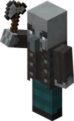

The Woodland Mansion is a famous structure in Minecraft that can be considered as one of the largest structures in the game. It is primarily made u of spruce wood and its types, alongside tons of cobblestone. It is found in biomes like the pale forest and dark forests. It contains dozens of rooms, some of them being hidden rooms with no entrances all containing secrets and multitudes of loot, ranging from libraries to rooms with diamond blocks. The wodland mansion is also one of the hardest structures to find, often needing a map that you can trade from villagers. It is also one of the hardest structures to raid, as it contains some of the deadliest mobs in the game. It can also spawn regular hostile mobs due to the mansion not having enough light sources to prevent them from spawning. This can add an extra layer of dificulty which may affect you when raiding it.

Some of the mobs that can be found in this structure include the vindicator, evoker, and the allay. Vexes can also be spawned once an evoker is provoked by a player. Some of these mobs espeially the vindicator, can deal tons of damage even with full enchanted armor sets. Vexes are also really dangerous as when spawned from evokers, they hold iron swords that do a lot of damage. They can also phase through blocks, which may make them harder to hit. The vindicators are equally if not even more dangerous, as they hold iron axes that can deal tons of damage and disable your shield.
A woodland mansion also has many different rooms, each containing specific loot. Some of these rooms may include things like bookshelves, jail cells containing allays, maps, etc. There are also many secret rooms, each containing better loot, however, they cannot be accessed normally and must be found. Some of these secret rooms include the mock end portal room, wherein the end portal is wool. Two chests can be found and they contain tnt and ender pearls. Another secret room is the obsidian lava glass room, wherein inside the lava, you can find a diamond block, one of the most valuable blocks in the entire game.

Here's a table for the things found inside a woodland mansion:
| Woodland Mansion Things | ||
|---|---|---|
| Mobs | Blocks | Rooms |
| Vindicator | Cobblestone | Lava Portal Room |
| Evoker | Birch Planks | Obsidian Room |
| Allay | Dark Oak Planks | Fake End Portal Room |
| Zombie | Red Carpet | Attic Room |
| Skeleton | Iron Bars | Clean Chest Room |
Lastly, here's a link to a helpful video for a more in-detail explanation of Woodland Mansions: NEW Ultimate Minecraft Woodland Mansion Guide | 1.21.6/ PE 1.21.90 | How to Find, Loot, BEAT IT!